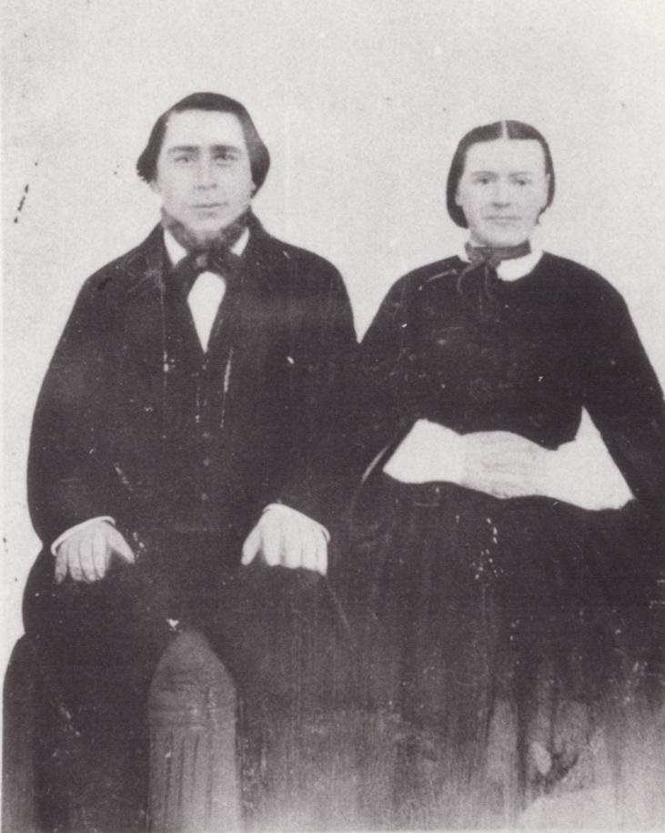

1834 – 1901
| Birth: | 04 Dec 1834 | Bindslev, Hjørring, Denmark |
|---|---|---|
| Marriage: | 12 Nov 1861 | Åby, Ålborg, Denmark |
| Death: | 03 Feb 1901 | Sanford, Colorado |
| HOME | ||
History of Jens Nielsen Jensen, born 4 December 1834 in Bindslev, Hjørring, Denmark;
the son of Niels Kjeldsen Jesen and Karen Pedersen. He grew up in Denmark and learned to be a shoemaker,
the same trrade as his father, as every young man did at that time. He married Mettie Katrina Jensen in
1856. to them five children were born. They joined The Church of Jesus Christ of Latter-day Saints and were
baptized in December 1861. Their children were:
Karen Maria Jensen born 1858 in Belgrow, Denmark. Died 1862 with measles and was buried in at sea as they were sailing for America.
Karen Marie Jensen born 2 February 1863 in Pleasant Grove, Utah.
James Chrstian Jensen born 2 August 1865 in Fountain Green, Utah.
Nielsena Katrina Jesen born 23 June 1869, died 27 June 1928 in Sanford, Colorado.
They left Denmark to come to the United States in 1861. They crossed the Atlantic Ocean on a sailing vessel. It took them six weeks. It ws the last trip the old ship ever made. They joined a company of Saints in Winter Quarters, Nebraska where Niel Kyeldseon Jensen took ill, died and was buried there. Great-grandmother Karen Jensen went on with them to Fountin Green, Utah where she lived for several years. She died and was buried there.
They lived in Fountian Green for several years. Then President Brigham Young called them with a company of covered wagans to settle in Colorado as missionaries. They sold their home and farm and put their furnitre in covered wagons and drove across the desert. They saw lots of Indians, but were never bothered by them. They were always afraid they might. They had a hard time getting across the Platte River. It was high and the wagons went down stream. My mother drove one of the wagons part of the way. My father was one of the scouts when he was a young man. They settled in Sanford, Colorado where they had a nice brick house built. Grandfather died in 1901 of dropsy at the age of 67,